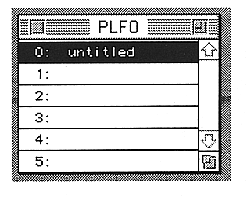
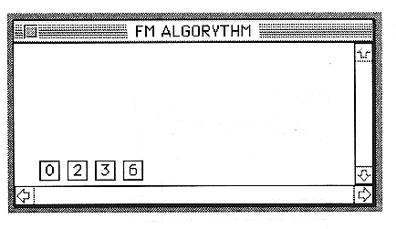

Return to previous page ｜ Return to menu ｜ Go to next page
●PLFO
- Opens / closes the PLFO window.

For details on the PLFO window, refer to “■ PLFO Window” in 7. Window.
●FM
- Opens and closes the FM connection window.

For the FM connection window, refer to “■ FM window” in 7. Window.
Return to previous page ｜ Return to menu ｜ Go to next page